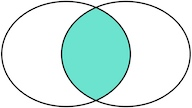
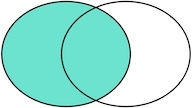
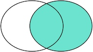

MySQL多表查询
别名
为表指定别名
SELECT * FROM 表名 [AS] 别名；
为字段指定别名
SELECT
[column_1 | expression] AS descriptive_name
FROM table_name;
AS关键字是可选的，可以在语句中省略它。注意，你也可以给表达式一个别名
交叉查询
没有任何限制条件的连接方式”称之为”交叉连接”，”交叉连接”后得到的结果跟线性代数中的”笛卡尔乘积”一样
查询多张表的语法是：SELECT * FROM <表1> <表2>
如果我们同时将多张表使用上述语句查询，而且每张表中的数据又比较多，那么可以想象，我们得到结果的时间可能会非常长，而且得到结果以后，可能也没有太大的意义
通过交叉连接的方式进行多表查询的这种方法，我们并不常用，而且我们应该尽量避免这种查询
连接查询
内连接
inner join
我们把tableA看作左表，把tableB看成右表，那么INNER JOIN是选出两张表都存在的记录
select a.*, b.* from tablea a
inner join tableb b
on a.id = b.id

外连接
left join
left join是选出左表存在的记录， 右表不存在的记录填充Null, 这种场景下得到的是A的所有数据，和满足某一条件的B的数据;
select a.*, b.* from tablea a
left join tableb b
on a.id = b.id

right join
right join是选出右表存在的记录 这种场景下得到的是B的所有数据，和满足某一条件的A的数据；
select a.*, b.* from tablea a
right join tableb b
on a.id = b.id
